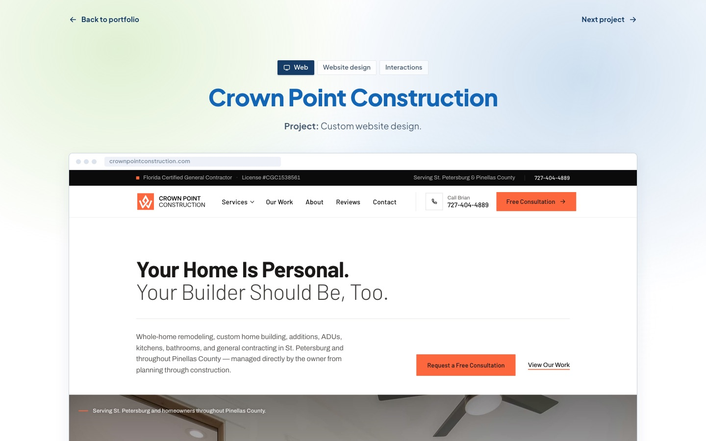
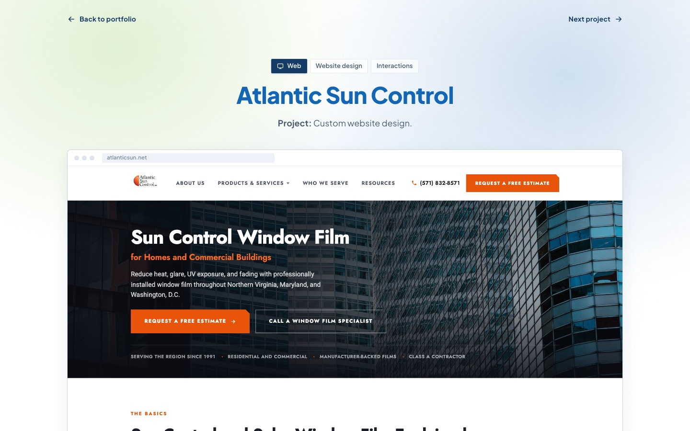
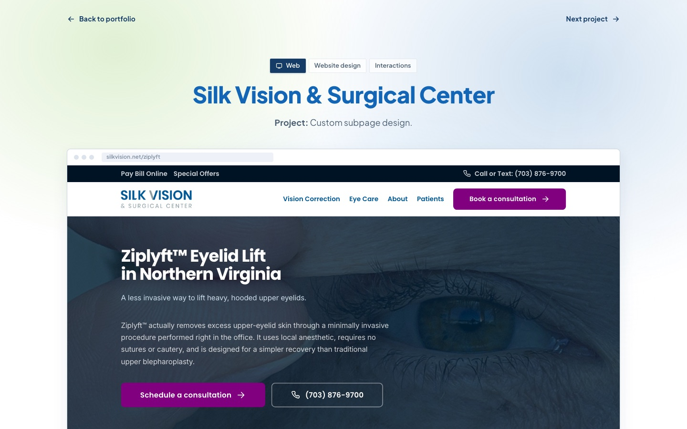
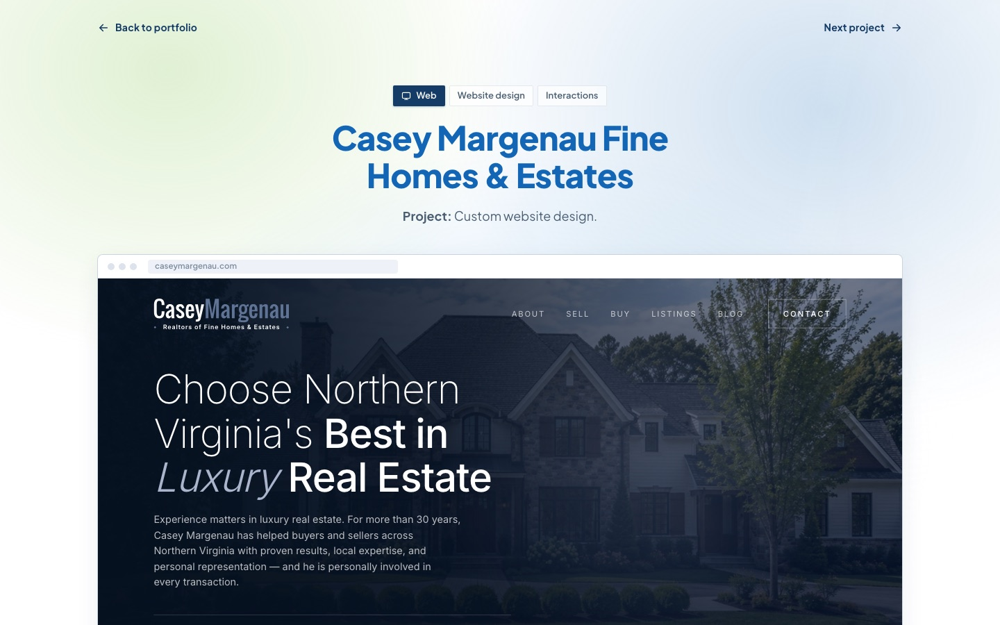
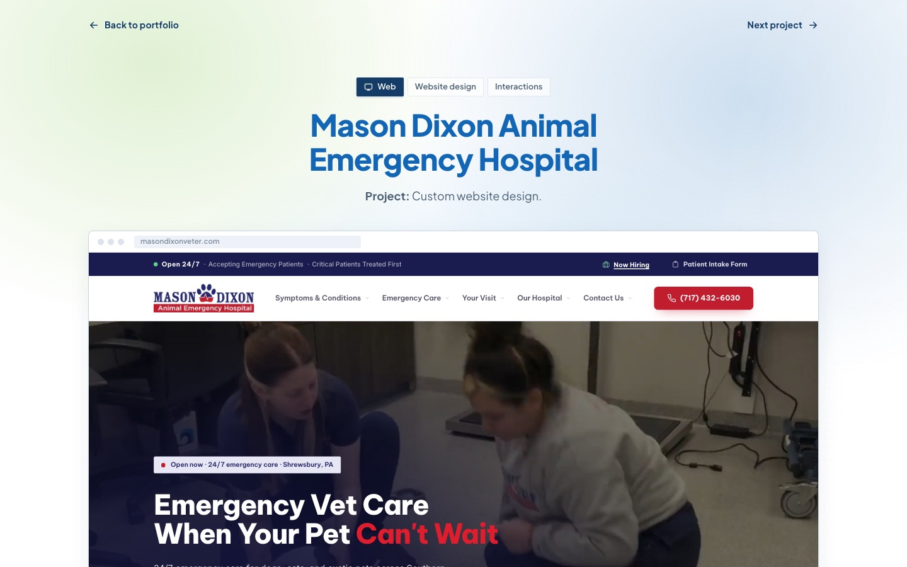
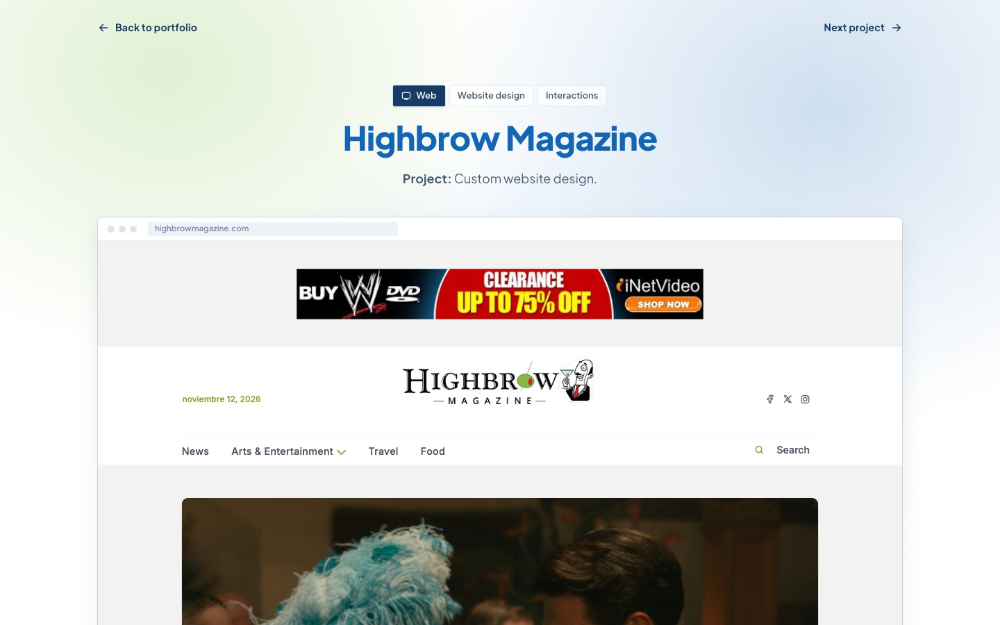
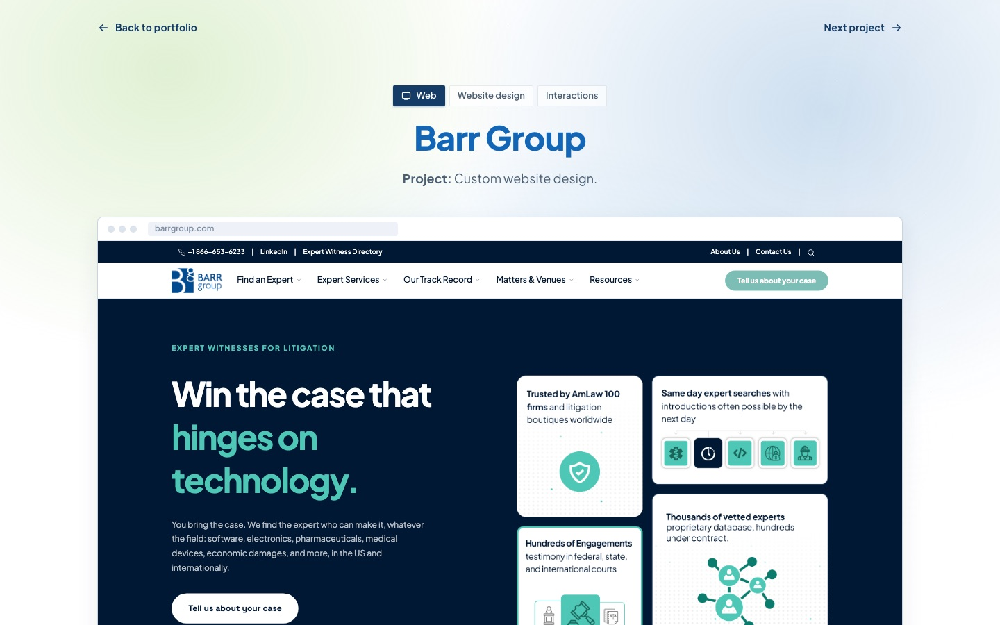
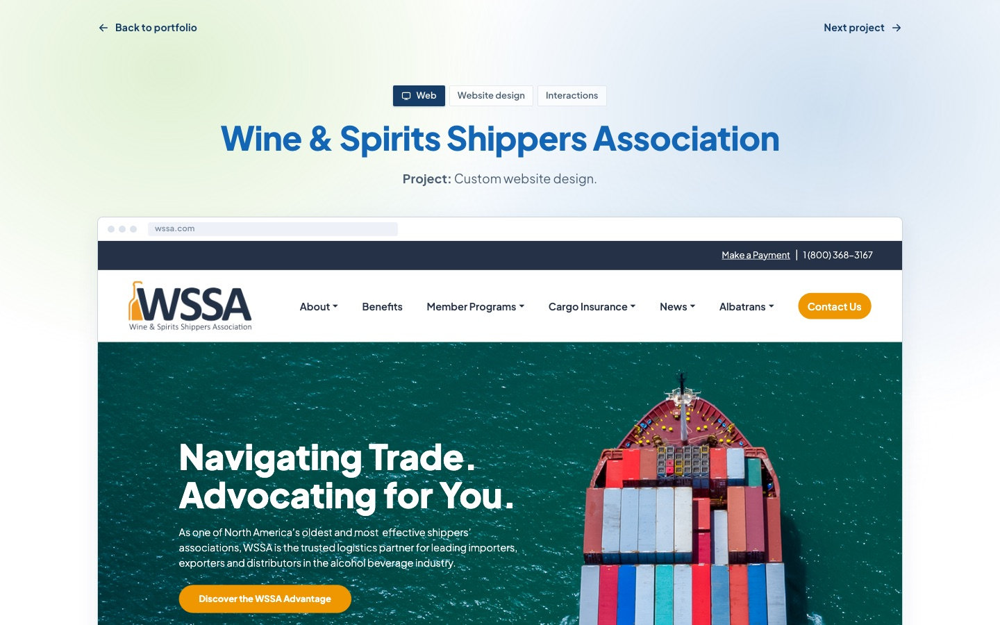
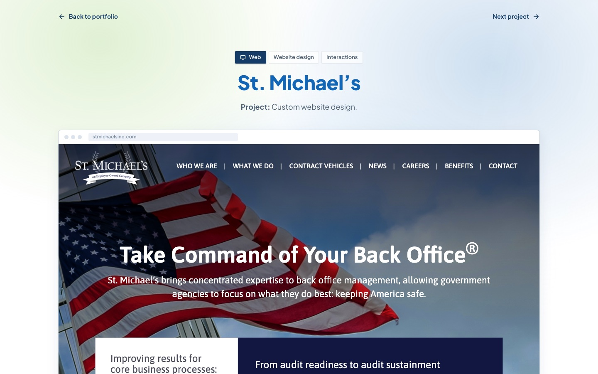

Interactive
Crown Point Construction
The homepage, live: services, approach, recent work and FAQ.
Open the pageOne page per project, each with the site itself running inside it: the homepage scrolling by itself, then its sections one by one, live to the pointer.

The homepage, live: services, approach, recent work and FAQ.
Open the page
The homepage, live: services, residential, why and FAQ.
Open the page
The Ziplyft and entropion subpages, live: results, compare, procedure and symptoms.
Open the page
The homepage, live: featured homes, process, testimonials and FAQ.
Open the page
The homepage, live: reviews, your visit, services and FAQ.
Open the page
The homepage, live: featured stories, top stories, news and videos.
Open the page
The homepage, live: the comparison, what we do, methodology and FAQ.
Open the page
The homepage, live: why partner, the contact form and testimonials.
Open the page
The homepage, live: back office services, careers and who they are.
Open the pageEvery page ends on the portfolio's closing band and links back to the grid.
Whether you need a brand or a website that moves, our senior team handles it start to finish — all under one roof.
Get started today